Johnny Rockets
This is a rebranding project for Johnny Rockets. Reinterpreting the brand's original vision of futurism, I developed a concept centered on Y2K futurism aesthetic that is once again widely embraced in contemporary culture. I modified the Pump typeface to create a custom typographic system, and incorporated illustrations inspired by atomic motifs to enhance the playful nature of the fast-food industry. Through this approach, the design moves away from rigid structures, instead expressing a more fluid, contemporary, and visually engaging identity.

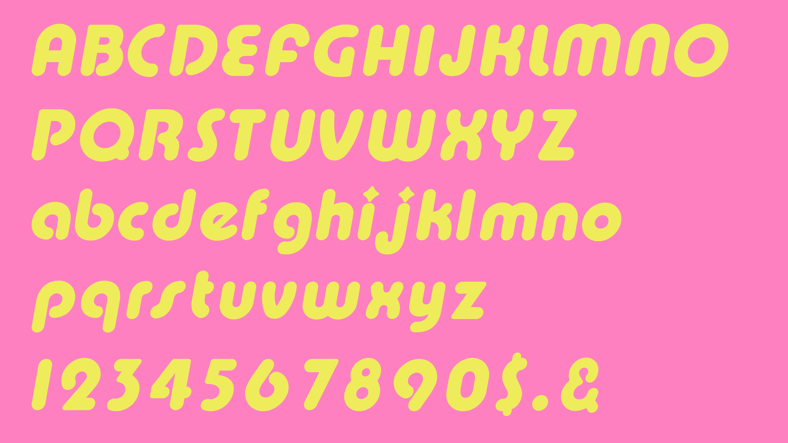
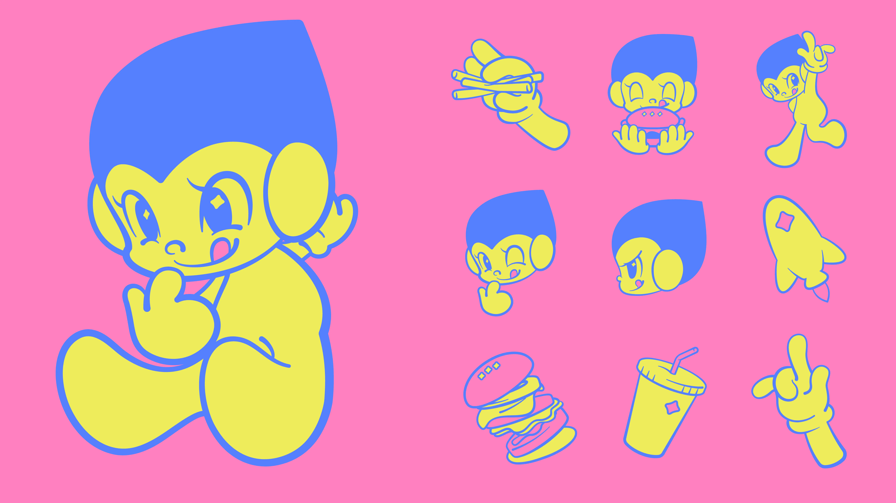
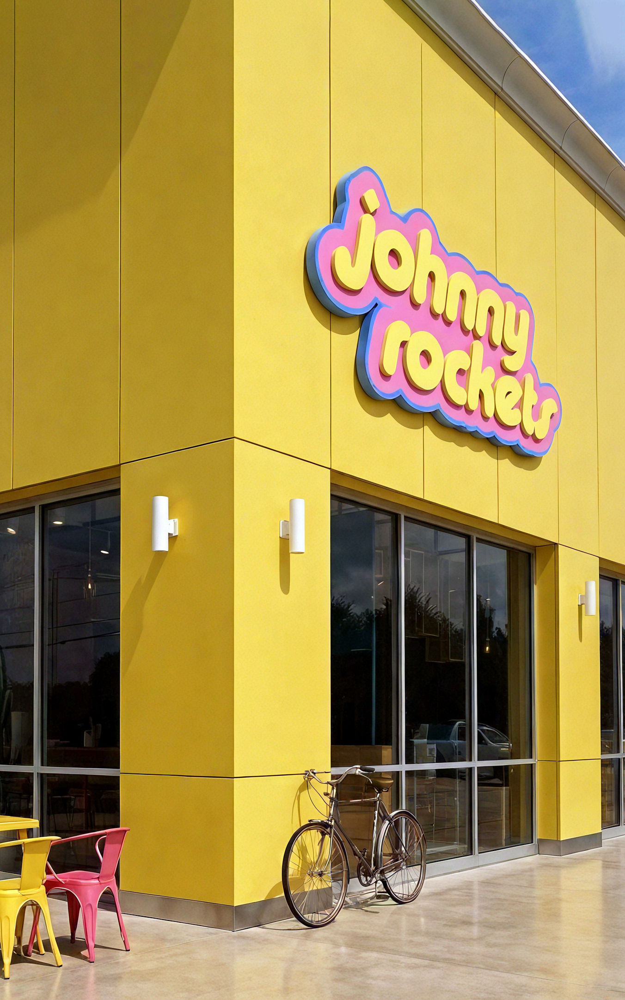
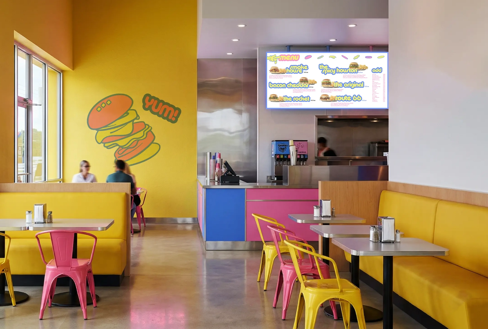
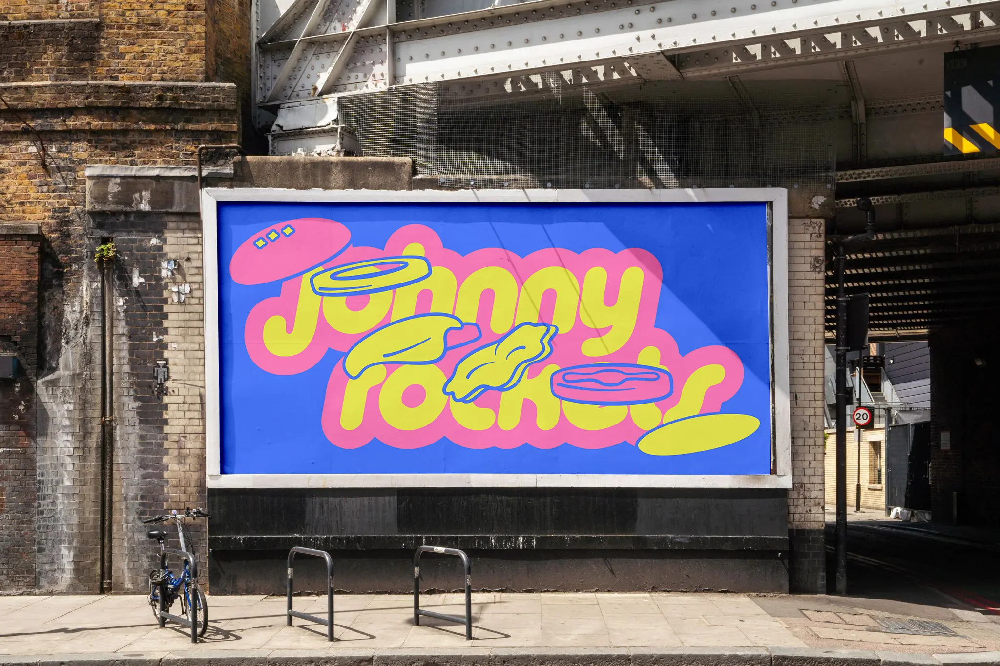
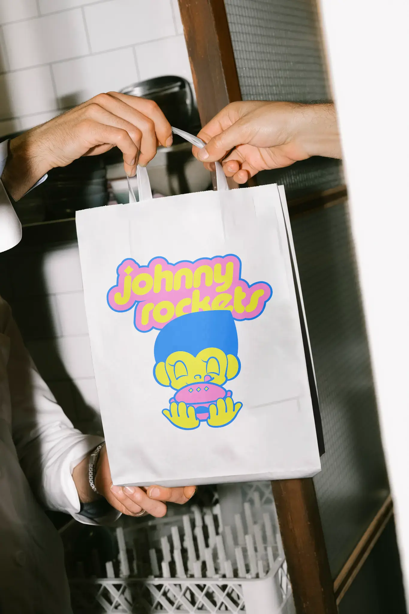
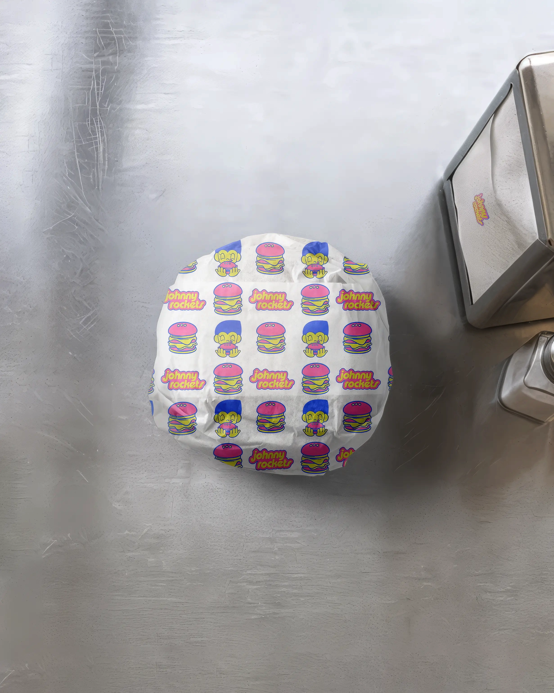
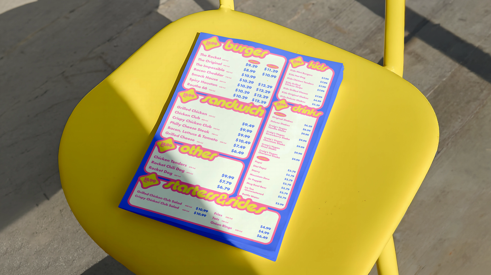
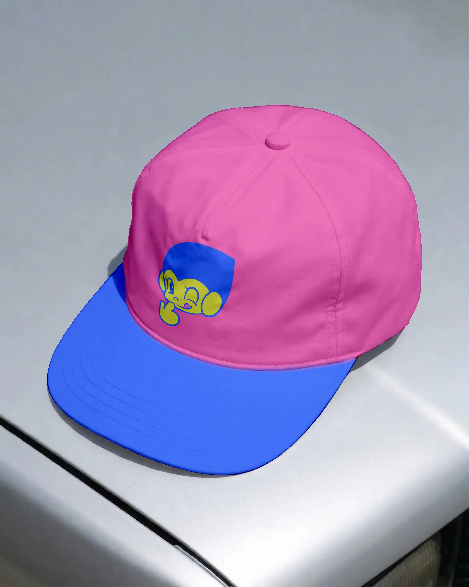
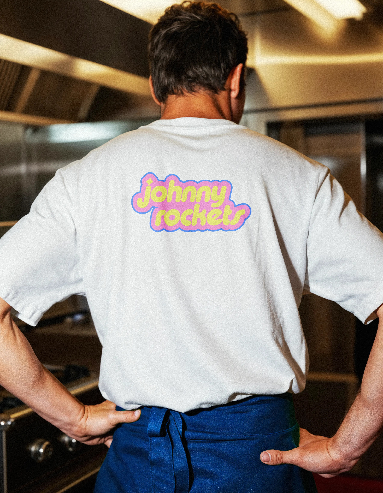
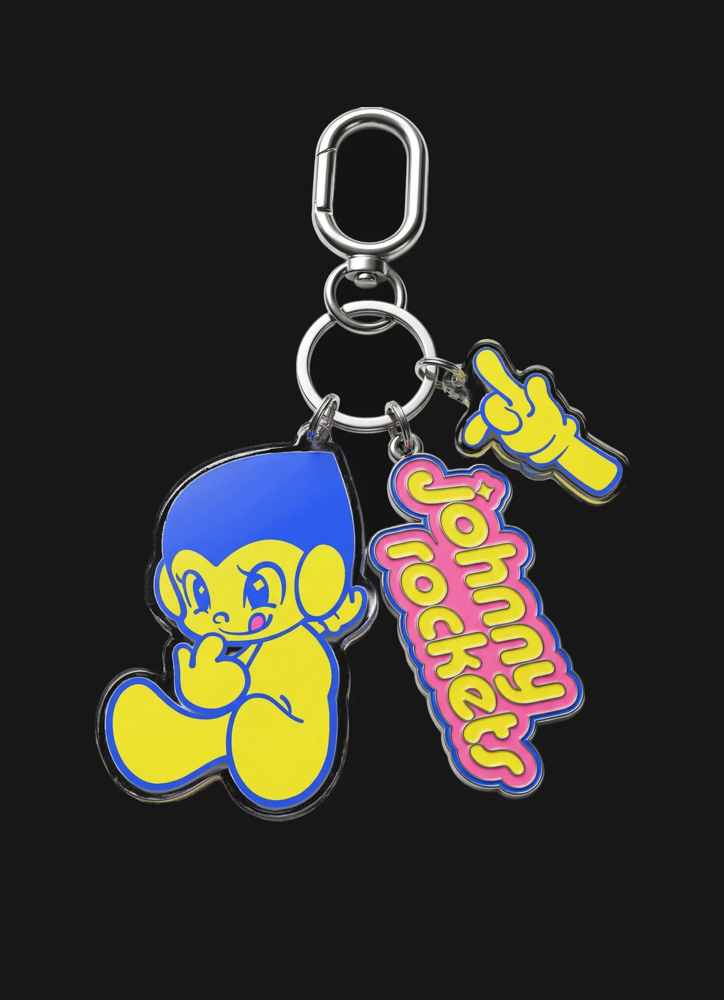
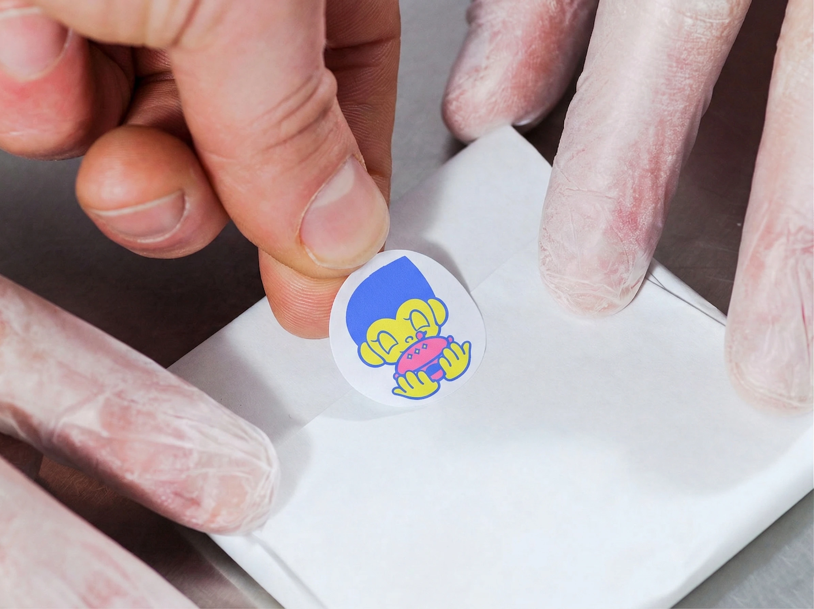